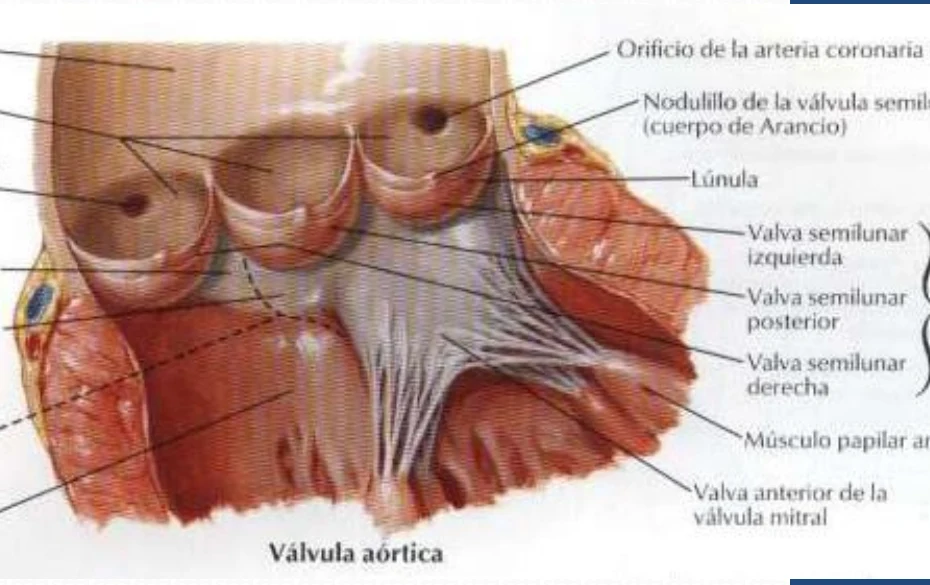
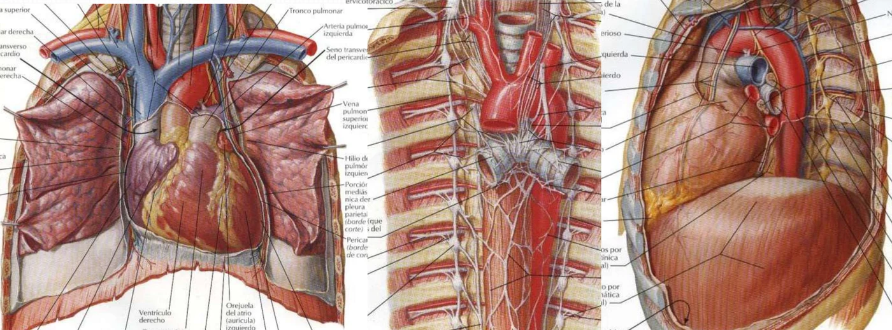
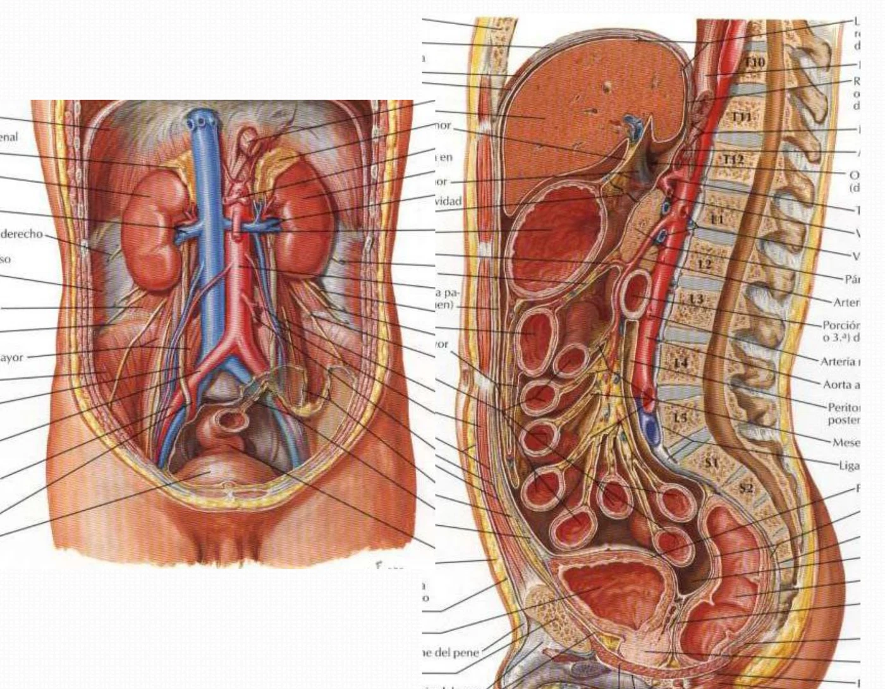
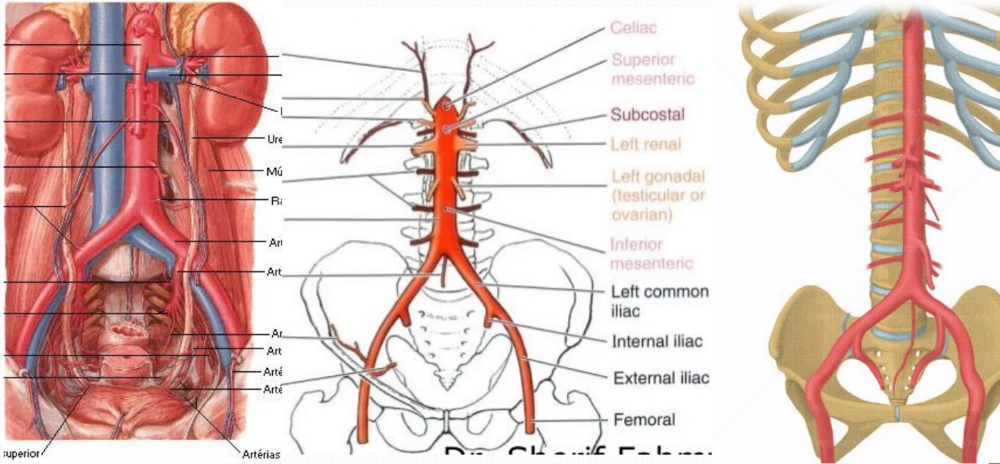
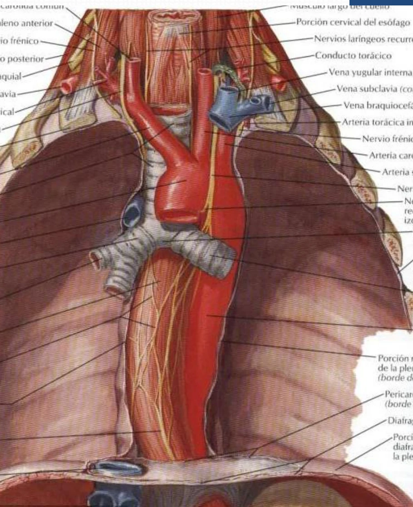
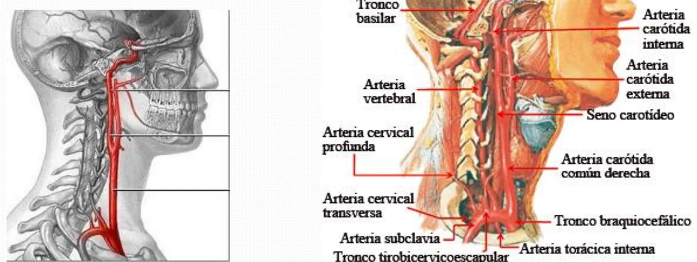
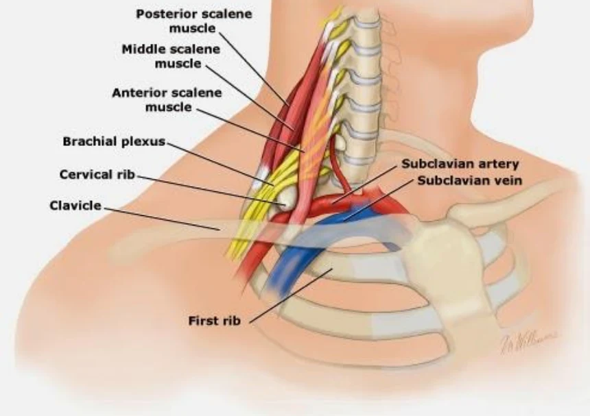
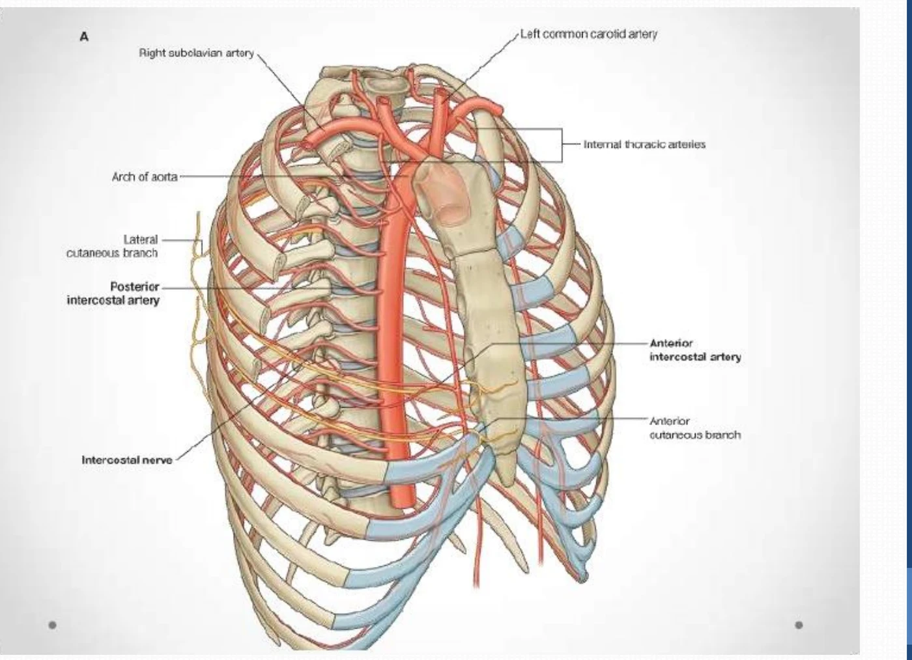
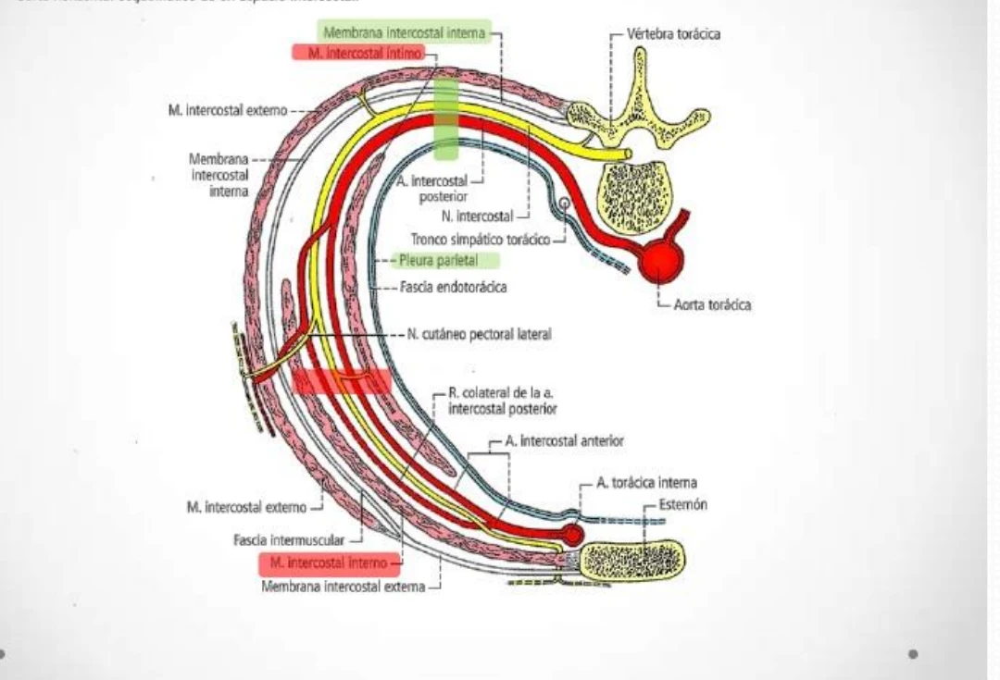

ClinicusMed · Dossiê Clinicus — Padrão de Excelência
É a artéria de maior calibre, emerge do ventrículo esquerdo e forma o eixo principal da circulação.

| Aspecto | Descrição |
|---|---|
| Origem | VE, marcada pelas valvas semilunares que interceptam os seios aórticos (de Valsalva) — local de origem das artérias coronárias |
| Trajeto | Para a frente, para cima e para a direita; forma o arco (cajado) aórtico; desce verticalmente |
| Término | L4–L5, nas artérias ilíacas comuns |
| Calibre | Bulbo aórtico 25–30 mm; o arco mantém o calibre do bulbo e diminui gradualmente após seus ramos |
| Istmo aórtico | Estreitamento entre o ligamento arterioso e a saída da subclávia esquerda |
| Estrutura | Paredes grossas e resistentes |
| Segmentos | Ascendente · arco · descendente (torácica e abdominal) |
| Aspecto | Descrição |
|---|---|
| Posição | Intrapericárdica: atrás, abaixo e à esquerda do orifício do tronco pulmonar |
| Bulbo aórtico | Fica atrás do cone arterial do VD (ventrículo direito); dá origem às coronárias |
| Serosa | Revestida pelo pericárdio seroso; junto ao tronco pulmonar forma a parede anterior do seio transverso |
| Extrapericárdica (anterior) | Esterno, restos tímicos, pleura e pulmão |

Descreve um cajado de dupla concavidade:
| Curvatura | Concavidade |
|---|---|
| Principal | Inferior, acima da raiz pulmonar esquerda |
| Acessória | Direita, sobre a traqueia e o esôfago |
| Relação | Estruturas |
|---|---|
| Atrás e à direita | Traqueia, esôfago, nervo laríngeo recorrente esquerdo, plexo cardíaco e ducto torácico |
| Adiante e à esquerda | Nervos cardíacos anteriores, nervo vago esquerdo, nervo frênico esquerdo, pleura e pulmão esquerdos |
| Abaixo | Artéria pulmonar esquerda (unida pelo ligamento arterioso), brônquio esquerdo, linfonodos, plexo cardíaco e gânglio cardíaco, arco subaórtico do nervo laríngeo recorrente esquerdo, artéria pulmonar direita |
| Acima | Tronco braquiocefálico, carótida comum esquerda e subclávia esquerda |
Desce verticalmente ao longo da coluna vertebral, no mediastino posterior.
| Segmento | Relações |
|---|---|
| Superior (laterovertebral) | Esquerda: pleura e pulmão · Direita: coluna vertebral, esôfago, ducto torácico · Anterior: brônquio esquerdo, artéria pulmonar esquerda, pericárdio, veia pulmonar inferior, vago · Posterior: ângulo costovertebral esquerdo, tronco simpático, veia hemiázigos acessória |
| Inferior (prevertebral) | Atrás: vértebras, veia hemiázigos, ducto torácico · Adiante: pericárdio e espaço de Portal · Esquerda: hemiázigos, veias intercostais, tronco simpático · Direita: veia ázigos |
Ramos colaterais: artérias intercostais posteriores, ramos mediastinais, bronquiais, esofágicos e pericárdicos, e artérias frênicas superiores.

Do hiato aórtico até a bifurcação em artérias ilíacas comuns.
| Relação | Estruturas |
|---|---|
| Posterior | Coluna vertebral, cisterna do quilo, linfonodos retroaórticos, veias lombares esquerdas |
| Esquerda | Pilar esquerdo do diafragma, nervos esplâncnicos, veia hemiázigos |
| Direita | Pilar direito do diafragma, VCI |
| Anterior — nível celíaco (T12–L1) | Região celíaca, plexo celíaco |
| Anterior — nível duodenopancreático (L2–L3) | Cabeça e corpo do pâncreas; nascem a mesentérica superior, renais e testiculares/ováricas; veia renal esquerda, origem da veia porta |
| Anterior — infraduodenopancreático | Bifurcação aórtica |

| Ramos parietais | Ramos viscerais |
|---|---|
| Frênicas inferiores · lombares · sacral média | Tronco celíaco · mesentérica superior · mesentérica inferior · suprarrenais médias · testiculares/ováricas |
Ramos terminais: artérias ilíacas comuns (primitivas), direita e esquerda.

| Aspecto | Descrição |
|---|---|
| Calibre | A artéria mais volumosa que sai do arco aórtico; no mediastino superior |
| Origem / Trajeto | Arco aórtico; para cima, à direita e para trás (3 cm) |
| Término | Bifurca-se em carótida comum direita e subclávia direita |
| Posterior | Traqueia e nervo vago |
| Esquerda | Carótida comum esquerda |
| Direita | Veia braquiocefálica direita, pleura e linfonodos paratraqueais |
| Anterior | Veia braquiocefálica esquerda, timo, músculos infra-hióideos, manúbrio |
| Ramos | Habitualmente não dá ramos. Pode dar a tireóidea ima ou a tímica |

| Aspecto | Descrição |
|---|---|
| Origem | Direita: tronco braquiocefálico. Esquerda: aorta (porção torácica) |
| Trajeto | Direita: retilíneo no pescoço. Esquerda: oblíquo para trás e esquerda no tórax, depois retilíneo no pescoço |
| Término | Carótida interna e externa na borda superior da cartilagem tireóidea; apresenta o seio carotídeo |
| Relações torácicas (esquerda) | Anterior: tronco braquiocefálico, vago e timo · Posterior: subclávia esquerda, laríngeo recorrente · Medial: traqueia · Lateral: pleura, frênico |
| Base do pescoço | Medial: traqueia · Lateral: glândula tireoide, laríngeo recorrente · Anterior: jugular interna, omo-hióideo, ECM · Posterior: processos transversos, vertebral, tronco simpático |
| Conduto carotídeo | Formado pelo ECM; eixo vasculonervoso: carótida comum + jugular interna + vago, envolvidos pela bainha carotídea |

| Aspecto | Descrição |
|---|---|
| Origem | Direita: tronco braquiocefálico. Esquerda: arco aórtico |
| Trajeto | Intratorácico (esquerda, vertical); na fossa supraclavicular descreve curva côncava sobre a 1ª costela |
| Término | Continua-se como artéria axilar a partir da borda lateral da 1ª costela |
| Pré-escalênica | Segmento intratorácico da esquerda; relações: vago, veia braquiocefálica, esôfago, laríngeo recorrente, pleura |
| Interescalênica | Abaixo: 1ª costela (sulco) · Adiante: escaleno anterior · Atrás: escaleno médio |
| Pós-escalênica | Região cervical lateral, no triângulo omoclavicular; acompanhada da veia subclávia |
Ramos colaterais: artéria vertebral · artéria torácica interna (mamária interna) · tronco tireocervical · tronco costocervical.

| Aspecto | Descrição |
|---|---|
| Origem / Trajeto | Subclávia; medial e anterior no tórax |
| Anterior | Cervical: veia subclávia · Torácica: cartilagens costais e músculos intercostais |
| Posterior | Cervical: cúpula pleural · Torácica: pleura, fáscia endotorácica e músculo transverso do tórax |
| Ramos colaterais | Mediastinais, tímicos, esternais, pericardiofrênica (frênica superior) e intercostais anteriores |
| Ramos terminais | Musculofrênica (toracofrênica) e epigástrica superior (atravessa o triângulo esternocostal; anastomosa com a epigástrica inferior) |
| Anastomose transversal | No espaço intercostal |
| Anastomose vertical | Na bainha do reto abdominal; une a subclávia à ilíaca externa |

| Aspecto | Descrição |
|---|---|
| Disposição | Metamérica, destino parietal; pares, de 7 a 11 |
| Origem | Aorta. A 1ª e 2ª vêm do tronco costocervical; da 3ª em diante, da aorta torácica |
| Lado direito | Mais longas: cruzam atrás do esôfago e à frente das vértebras |
| Ramos | Ramo dorsal e ramos espinais |
| Anastomose | No sulco costal com as intercostais anteriores (ramo da torácica interna) |
| Subcostal | A última, abaixo da 12ª costela — não é intercostal |
| Casos particulares | 3ª direita pode dar a bronquial direita · as 4 últimas irrigam os músculos largos do abdome · uma das últimas pode originar a artéria medular segmentar (Adamkiewicz) · do 5º espaço (frente) e 8º (atrás) irrigam o diafragma |
Um caso que mostra como a anatomia dos segmentos e dos ramos da aorta explica os sinais de uma emergência vascular clássica.
A Clinicus selecionou este conteúdo para complementar seu estudo. Não substitui a leitura do resumo — o resumo ensina, o vídeo reforça.
Carregando recomendações...
O sistema guarda, no seu navegador, quais cards você já sabe bem e quais precisam voltar mais cedo — cada vez que você avalia um card, ele recalcula quando ele deve voltar.
12 questões, do mais básico ao mais puxado. Escolhe uma alternativa, depois clica em "Ver comentário completo" — vale a pena ler até quando você acerta, porque o comentário explica cada alternativa, não só a certa.